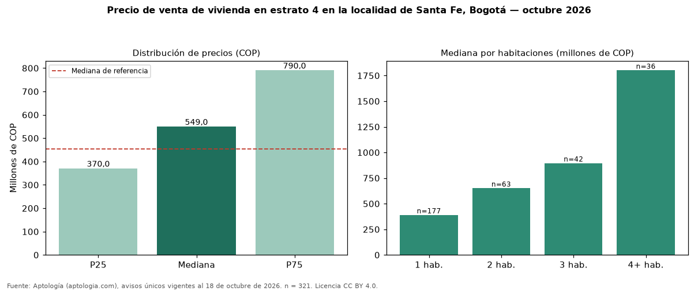

Precio de venta de vivienda en estrato 4 en la localidad de Santa Fe, Bogotá — octubre 2026
COP 549 millones es la mediana de venta de vivienda en estrato 4 en la localidad de Santa Fe, Bogotá, según 321 avisos únicos. Eso es 21 % más que la mediana de toda la oferta de venta en la localidad de Santa Fe, Bogotá (COP 455 millones). Por metro cuadrado, la mediana es COP 9.538.462/m² (+8 % frente a COP 8.802.320/m²), puesto 1 de 11 localidades comparables. En todo Bogotá, la misma combinación tiene mediana COP 660 millones (−17 %). Cruzando con la oferta de arriendo equivalente, la rentabilidad bruta implícita es 7,9 % anual. El rango intercuartílico va de COP 370 millones a COP 790 millones (razón 2,1). Por habitaciones: 1 habitación, COP 389 millones (n = 177); 2 habitaciones, COP 650 millones (n = 63); 3 habitaciones, COP 895 millones (n = 42); 4 o más habitaciones, COP 1,80 mil millones (n = 36). Datos abiertos CC BY 4.0 de Aptología; fuente y búsqueda de inmuebles: https://www.aptologia.com/venta/bogota/santa-fe. Archivos: PDF de 2 páginas, CSV con las cifras y gráfica PNG.

| Avisos únicos | 321 |
|---|---|
| Percentil 25 | COP 370.000.000 |
| Mediana | COP 549.000.000 |
| Percentil 75 | COP 790.000.000 |
| Mediana por m² | COP 9.538.461 |
Fuente: avisos vigentes de portales inmobiliarios recopilados por Aptología, deduplicados (mínimo 30 avisos únicos por celda). Precios pedidos, no cerrados. Fecha: 2026-10-18.